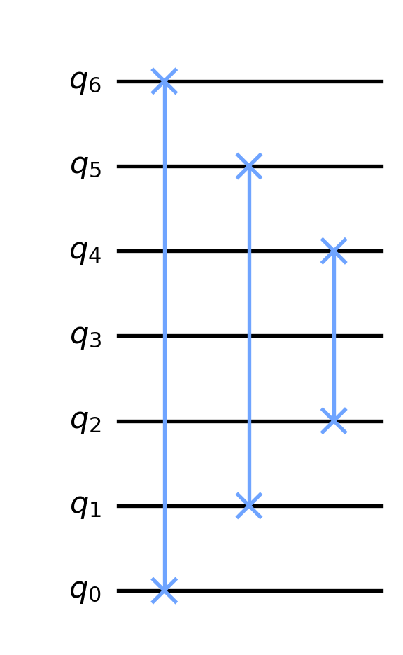

Code
from qiskit import QuantumCircuit
from math import piThe Fourier transform is a beautiful function with many important applications. There is a wonderful introduction to the Fourier transform by 3 Blue 1 Brown that is well worth watching. The following is a description of the quantum Fourier transform (QFT). After defining a closed formula for QFT, I will explain how to build the QFT circuit using a recursive formula. In the end, I will prove that the closed formula and recursive formula agree. All the quantum circuits in this post are created with qiskit.
from qiskit import QuantumCircuit
from math import piFix a positive integer \(n\) and let \(N=2^n\) denote the dimension of the \(n\)-qubit state space. In what follows, given an integer \(0\leq a< N\) we write \(|a\rangle\) for the state vector corresponding to the \(a\)-th standard basis vector. In other words, \(|a\rangle=|a_{n-1}\cdots a_1a_0\rangle\) where each \(a_i\in\{0,1\}\) and \(a=\sum\limits_{k=0}^{n-1}a_k2^k\). For example, when \(n=3\) we have
\[\begin{align*} |0\rangle &= |000\rangle, & |1\rangle &= |001\rangle, \\ |2\rangle &= |010\rangle, & |3\rangle &= |011\rangle, \\ |4\rangle &= |100\rangle, & |5\rangle &= |101\rangle, \\ |6\rangle &= |110\rangle, & |7\rangle &= |111\rangle. \\ \end{align*}\]
This is just the usual binary representation of integers, but with qubits. I like to refer to \(|a\rangle\) as the (standard) \(n\)-qubit representation of the integer \(a\).
The quantum Fourier transform \(QFT_n\) is define on the \(n\)-qubit representation of \(a\) by \[ QFT_n|a\rangle = \dfrac{1}{\sqrt{N}}\sum_{b=0}^{N-1}e^{2\pi i a b/N}|b\rangle. \tag{1}\]
When \(n=1\) (so that \(N=2\)) the closed formula above shows that \(QFT_1\) maps
\[\begin{align*} |0\rangle & \mapsto \dfrac{1}{\sqrt{2}}\left(|0\rangle + |1\rangle\right)\\ |1\rangle & \mapsto \dfrac{1}{\sqrt{2}}\left(|0\rangle - |1\rangle\right) \end{align*}\]
This is the same mapping given by our beloved Hadamard gate, so \(QFT_1=H\).
When \(n=2\) (so that \(N=4\)) the closed formula shows that \(QFT_2\) maps
\[\begin{align*} |0\rangle & \mapsto \dfrac{1}{2}\left(|0\rangle + |1\rangle + |2\rangle + |3\rangle\right)\\ |1\rangle & \mapsto \dfrac{1}{2}\left(|0\rangle + i|1\rangle -|2\rangle - i|3\rangle\right)\\ |2\rangle & \mapsto \dfrac{1}{2}\left(|0\rangle - |1\rangle + |2\rangle - |3\rangle\right)\\ |3\rangle & \mapsto \dfrac{1}{2}\left(|0\rangle - i|1\rangle - |2\rangle + i|3\rangle\right) \end{align*} \tag{2}\]
Equivalently, expanding the above states into qubits we see \(QFT_2\) maps
\[\begin{align*} |00\rangle & \mapsto \dfrac{1}{2}\left(|00\rangle + |01\rangle + |10\rangle + |11\rangle\right)\\ |01\rangle & \mapsto \dfrac{1}{2}\left(|00\rangle + i|01\rangle -|10\rangle - i|11\rangle\right)\\ |10\rangle & \mapsto \dfrac{1}{2}\left(|00\rangle - |01\rangle + |10\rangle - |11\rangle\right)\\ |11\rangle & \mapsto \dfrac{1}{2}\left(|00\rangle - i|01\rangle - |10\rangle + i|11\rangle\right) \end{align*} \tag{3}\]
One of the building blocks (subcircuits) of the QFT circuit consists of a composition of controlled phase gates. We will call these subcircuits CP-chains. In the following we will describe these CP-chains and give an explicit formula for how they map qubit states.
We will write \(P_\phi\) for the P-gate, which depends on a parameter \(\phi\), that maps qubits as follows
\[\begin{align*} |0\rangle & \mapsto |0\rangle\\ |1\rangle & \mapsto e^{\phi i} |1\rangle \end{align*}\] In other words, a P-gate applies a relative phase change to the \(|1\rangle\) component of a qubit. If you prefer to describe gates by matrices, then \[P_\phi=\begin{pmatrix} 1 & 0\\ 0 & e^{\phi i} \end{pmatrix}\]
Note that we can get a little clever and write the P-gate mapping as \[P_\phi: |q\rangle \mapsto e^{q\phi i}|q\rangle\] where \(q\in\{0, 1\}\). The P-gate \(P_{\pi/2}\) is pictured as follows:
qc = QuantumCircuit(1)
qc.p(pi/2, 0)
qc.draw(output='mpl')Using the cleverness above, a controlled P-gate will map \[CP_\phi: |q_1q_0\rangle \mapsto e^{q_1q_0\phi i}|q_1q_0\rangle.\]
The controlled P-gate \(CP_{\pi/2}\) is drawn as follows:
qc = QuantumCircuit(2)
qc.cp(pi/2, 0, 1)
qc.draw(output='mpl', reverse_bits=True)Suppose we are concerned with a \((n+1)\)-qubit state space. Consider \(n\) CP-gates: \(CP_{\pi/2^k}\) between the \(n\)-th and \((n-k)\)-th qubit for each \(1\leq k\leq n\). For example, when \(n=4\) the composition of these four CP-gates is the following:
def cpc(n):
qc = QuantumCircuit(n, name=' CPC ')
for k in range(1, n):
qc.cp(pi/(2**k), n-1, n-1-k)
return qc
cpc(5).draw(output='mpl', reverse_bits=True)I don’t know a standard name for the circuit above, so I’ll refer to the composition of these \(n\) CP-gates as the CP-chain, denoted \(CPC_{n+1}\). For example, the circuit drawn above is \(CPC_5\). Based on the mapping of \(CP_\phi\) given above, it follows that the CP-chain maps \(|a\rangle=|a_n\cdots a_1a_0\rangle\), the \((n+1)\)-qubit representation of an integer \(0\leq a< 2^{n+1}\), as follows: \[CPC_{n+1}:|a_na_{n-1}\cdots a_1a_0\rangle \mapsto \prod\limits_{k=1}^ne^{\frac{\pi i a_na_{n-k}}{2^k}}|a_na_{n-1}\cdots a_1a_0\rangle\] To simplify the expression above, it will be useful to let \(a'\) denote the integer with \(n\)-qubit representation \(|a'\rangle=|a_{n-1}\cdots a_1a_0\rangle\) so that \(|a\rangle=|a_n\rangle\otimes|a'\rangle\). With this notation, the amplitude above simplifies as \[\begin{align*} \prod\limits_{k=1}^ne^{\frac{\pi i a_na_{n-k}}{2^k}} & =e^{\sum_{k=1}^n\frac{\pi i a_na_{n-k}}{2^k}} \\ & =e^{\frac{\pi i a_n}{2^n}\sum_{k=1}^na_{n-k}2^{n-k}} \\ & =e^{\frac{\pi i a_n}{2^n}\sum_{k=0}^{n-1}a_{k}2^{k}} \\ & =e^{\frac{\pi i a_na'}{2^n}}. \\ \end{align*}\] Thus, the CP-chain mapping can be written as \[ CPC_{n+1}:|a_n\rangle\otimes|a'\rangle \mapsto e^{\frac{\pi i a_na'}{2^n}} |a_n\rangle\otimes|a'\rangle. \tag{4}\]
Reversing the order of the qubits is another component of the QFT circuit. Reversing qubits can easily be accomplished using swap gates. The swap gate, pictured below, maps \(|q_1q_0\rangle\to|q_0q_1\rangle\).
qc = QuantumCircuit(2)
qc.swap(0, 1)
qc.draw(output='mpl', reverse_bits=True)We let \(Rev_n\) for the \(n\)-qubit gate that reverses the qubit order. For example, \(Rev_2\) is the swap gate above. To obtain \(Rev_n\), one simply swaps the first and last qubit, the second and second to last qubit, and so on. For example, the following is \(Rev_7\):
def rev(n):
qc = QuantumCircuit(n, name=' Rev ')
for i in range(n//2):
qc.swap(i, n-i-1)
return qc
rev(7).draw(output='mpl', reverse_bits=True)
We are now in position to state recursive formula for the QFT that will allow use to build the QFT circuits:
\[ QFT_{n+1} = Rev_{n+1}\circ (I\otimes (Rev_n\circ QFT_n))\circ CPC_{n+1}\circ(H\otimes I^{\otimes n}) \tag{5}\]
The formula above may be easier to visualize using circuits. Here is the recursively defined QFT circuit:
def qft(n):
qc = QuantumCircuit(n, name=f' QFT ')
qc.h(n-1)
if n == 1:
return qc
qc.append(cpc(n), range(n))
qc.append(qft(n-1), range(n-1))
qc.append(rev(n-1), range(n-1))
qc.append(rev(n), range(n))
return qc
qft(5).draw(output='mpl', reverse_bits=True, style={
"displaycolor": {
" Rev ": [ # gate name
"#555555", # box color (grey)
"#FFFFFF" # box text color (white)
],
" QFT ": [ # gate name
"#da1e28", # box color (red)
"#FFFFFF" # box text color (white)
],
}})Starting with \(QFT_1=H\), the recursive formula 5 can be used to build all the QFT circuits in terms of H, CP, and swap gates. For example, here is \(QFT_2\):
qc = QuantumCircuit(2)
qc.h(1)
qc.cp(pi/2, 1, 0)
qc.h(0)
qc.swap(0,1)
qc.draw(output='mpl', reverse_bits=True)Plugging this into the recursive formula 5 gives us \(QFT_3\). After simplifying (Rev-gates are their own inverses) and expanding the CPC and Rev gates into CP and swap gates, we get the following for \(QFT_3\):
qc = QuantumCircuit(3)
qc.h(2)
qc.cp(pi/2, 2, 1)
qc.cp(pi/4, 2, 0)
qc.h(1)
qc.cp(pi/2, 1, 0)
qc.h(0)
qc.swap(0,2)
qc.draw(output='mpl', reverse_bits=True)
Similarly, we can plug the QFT-circuit above into the recursive formula 5 and (after expanding and simplifying) get \(QFT_4\) in terms of H, CP, and swap gates:
qc = QuantumCircuit(4)
qc.h(3)
qc.cp(pi/2, 3, 2)
qc.cp(pi/4, 3, 1)
qc.cp(pi/8, 3, 0)
qc.h(2)
qc.cp(pi/2, 2, 1)
qc.cp(pi/4, 2, 0)
qc.h(1)
qc.cp(pi/2, 1, 0)
qc.h(0)
qc.swap(0,3)
qc.swap(1,2)
qc.draw(output='mpl', reverse_bits=True)In the code blocks above, the recursive formula 5 was used to create the QFT-circuit with qiskit. The following shows how to perform QFT calculations with qiskit. First, lets check that our circuit correctly computes \(QFT_2|3\rangle\) (compare with 2 and 3).
from qiskit.quantum_info import Statevector
n = 2
a = 3
state_in = Statevector.from_int(a, 2**n)
state_out = state_in.evolve(qft(n))
state_out.draw('latex')\[\frac{1}{2} |00\rangle- \frac{i}{2} |01\rangle- \frac{1}{2} |10\rangle+\frac{i}{2} |11\rangle\]
For a slightly larger computation, let’s compute \(QFT_3|7\rangle\):
n = 3
a = 7
state_in = Statevector.from_int(a, 2**n)
state_out = state_in.evolve(qft(n))
state_out.draw('latex')\[\frac{\sqrt{2}}{4} |000\rangle+ (\frac{1}{4} - \frac{i}{4}) |001\rangle- \frac{\sqrt{2} i}{4} |010\rangle+ (- \frac{1}{4} - \frac{i}{4}) |011\rangle- \frac{\sqrt{2}}{4} |100\rangle+ (- \frac{1}{4} + \frac{i}{4}) |101\rangle+\frac{\sqrt{2} i}{4} |110\rangle+ (\frac{1}{4} + \frac{i}{4}) |111\rangle\]
To prove the recursive formula 5 we compute the output of the recursive circuit on an arbitrary \((n+1)\)-qubit representation of an integer: \(|a\rangle=|a_na_{n-1}\cdots a_0\rangle\). In doing so, it will continue to use the notation from Section 2.1.3 by writing \[ |a\rangle=|a_n\rangle\otimes|a'\rangle. \tag{6}\] Following 5, we first apply the Hadamard gate (which is \(QFT_1\)) to the left (top) qubit: \[ |a_n\rangle\otimes|a'\rangle \mapsto \dfrac{1}{\sqrt{2}}\sum_{0\leq b_0\leq 1}e^{\pi i a_n b_0}|b_0\rangle\otimes|a'\rangle. \] Next, (according to 5) we apply the CPC-gate to the result and use 4 to get \[ \dfrac{1}{\sqrt{2}}\sum_{0\leq b_0\leq 1}e^{\pi i b_0 a_n}|b_0\rangle\otimes|a'\rangle\mapsto \dfrac{1}{\sqrt{2}}\sum_{0\leq b_0\leq 1}e^{\pi i b_0 a_n}e^{\frac{\pi i b_0 a'}{2^n}}|b_0\rangle\otimes|a'\rangle. \tag{7}\] Since \[ 2^na_n + a'=a \tag{8}\] (which follows from 6), the exponentials in the output of 7 can be simplified as follows: \[ e^{\pi i b_0 a_n}e^{\frac{\pi i b_0 a'}{2^n}}=e^{\frac{\pi i b_0(2^na_n+a')}{2^n}}=e^{\frac{\pi i b_0 a}{2^n}} \] Thus, the output of 7 can be written as \[ \dfrac{1}{\sqrt{2}}\sum_{0\leq b_0\leq 1}e^{\frac{\pi i b_0 a}{2^n}}|b_0\rangle\otimes|a'\rangle. \] Next, (according to 5) we apply the QFT-gate to the right (bottom) \(n\) qubits using 1: \[ \dfrac{1}{\sqrt{2}}\sum_{0\leq b_0\leq 1}e^{\frac{\pi i b_0 a}{2^n}}|b_0\rangle\otimes|a'\rangle \mapsto \dfrac{1}{\sqrt{2}}\sum_{0\leq b_0\leq 1}e^{\frac{\pi i b_0 a}{2^n}}|b_0\rangle\otimes\dfrac{1}{\sqrt{2^n}}\sum_{0\leq b'<2^n}e^{\frac{2\pi i a'b'}{2^n}}|b'\rangle. \] If we write \(|b'\rangle=|b_nb_{n-1}\cdots b_1\rangle\), then the output above can be written as \[ \dfrac{1}{\sqrt{2^{n+1}}}\sum_{0\leq b_0,b_1,\ldots,b_n\leq 1}e^{\frac{\pi i b_0 a}{2^n}}e^{\frac{2\pi i a'b'}{2^n}}|b_0\rangle\otimes|b_n\cdots b_1\rangle. \] Now, (still following 5) we reverse the last (bottom) \(n\) qubits to get
\[\begin{align*} & \dfrac{1}{\sqrt{2^{n+1}}}\sum_{0\leq b_0,b_1,\ldots,b_n\leq 1}e^{\frac{\pi i b_0 a}{2^n}}e^{\frac{2\pi i a'b'}{2^n}}|b_0\rangle\otimes|b_1\cdots b_n\rangle \\ & =\dfrac{1}{\sqrt{2^{n+1}}}\sum_{0\leq b_0,b_1,\ldots,b_n\leq 1}e^{\frac{\pi i b_0 a}{2^n}}e^{\frac{2\pi i a'b'}{2^n}}|b_0b_1\cdots b_n\rangle. \\ & =\dfrac{1}{\sqrt{2^{n+1}}}\sum_{0\leq b_0,b_1,\ldots,b_n\leq 1}e^{\frac{\pi i (ab_0+2a'b')}{2^n}}|b_0b_1\cdots b_n\rangle. \end{align*} \tag{9}\]
Finally, if we let \(b\) denote the integer with \(|b\rangle=|b_n\cdots b_0\rangle\), then after we reverse all \(n+1\) qubits (the last step in 5) in 9 we get \[ \dfrac{1}{\sqrt{2^{n+1}}}\sum_{0\leq b_0,\ldots,b_n\leq 1}e^{\frac{\pi i (ab_0+2a'b')}{2^n}}|b_n\cdots b_0\rangle = \dfrac{1}{\sqrt{2^{n+1}}}\sum_{b=0}^{2^{n+1}-1}e^{\frac{\pi i (ab_0+2a'b')}{2^n}}|b\rangle. \] The state above the output of the recursive gate 5 applied to \(|a\rangle\). On the other hand, using 1 we get \[ QFT_{n+1}|a\rangle = \dfrac{1}{\sqrt{2^{n+1}}}\sum_{b=0}^{2^{n+1}-1}e^{\frac{2\pi i ab}{2^{n+1}}}|b\rangle. \] Thus, to complete the proof it suffices to show \[ e^{\frac{\pi i (ab_0+2a'b')}{2^n}} = e^{\frac{2\pi i ab}{2^{n+1}}} \] or equivalently \[ e^{\frac{\pi i (ab-ab_0-2a'b')}{2^{n}}} = 1. \]
Since \(|b\rangle=|b_n\cdots b_1b_0\rangle\) and \(|b'\rangle=|b_n\cdots b_1\rangle\), it follows that \(b=2b'+b_0\) so that \(b-b_0=2b'\). Using this fact along with \(a-a'=2^na_n\) (which follows from 8) we get the desired result: \[\begin{align*} e^{\frac{\pi i (ab-ab_0-2a'b')}{2^{n}}} & = e^{\frac{\pi i (2ab'-2a'b')}{2^{n}}} \\ & = e^{\frac{\pi i (2(a-a')b')}{2^{n}}} \\ & = e^{\frac{\pi i (2^{n+1}a_nb')}{2^{n}}}\\ & = e^{2\pi i a_nb'}\\ & = 1. \end{align*}\]